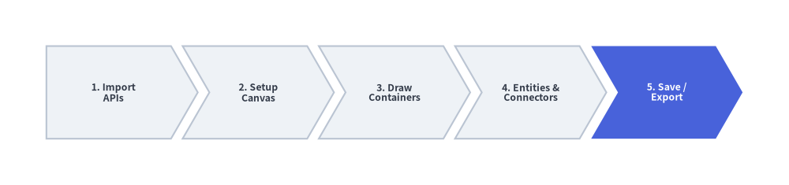
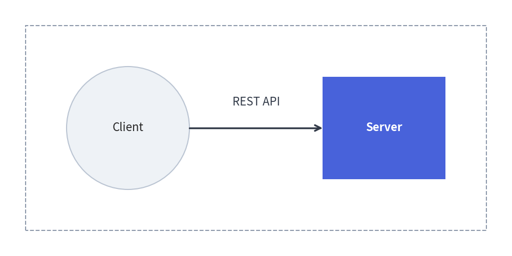

Quick Start Guide
Drawlib makes creating publication-ready technical diagrams intuitive and reproducible.
You can author diagrams either as standalone Python scripts (.py) or as embedded Markdown blocks (```drawlib).
The Standard 5-Step Drawing Workflow
Every Drawlib illustration follows a clean, predictable lifecycle:

Source Code
from drawlib.canvas import save, setup
from drawlib.icons import phosphor
from drawlib.shapes import circle
from drawlib.smartarts import ChevronProcess
from drawlib.styles import Styles
setup(width=126, height=34)
workflow = ChevronProcess(
style=Styles.Neutral,
text_style=Styles.DarkBold.patch(text_size=10.8),
description_style=Styles.Muted.patch(text_size=10.0),
corner_angle=65.0,
spacing=1.8,
flat_left_end=True,
)
workflow.add("1. Import\nAPIs")
workflow.add("2. Setup\nCanvas")
workflow.add("3. Draw\nZones", style=Styles.SecondaryNeutral)
workflow.add("4. Shapes\n& Lines")
workflow.add(
"5. Save /\nExport",
style=Styles.PrimaryFlat,
text_style=Styles.WhiteBold.patch(text_size=10.8),
)
workflow.draw(xy=(3.0, 3.0), width=120.0, height=17.0)
# Icons above each stage
stage_icons = [
(14.0, phosphor.palette, Styles.Neutral),
(38.0, phosphor.sliders_horizontal, Styles.Neutral),
(62.5, phosphor.grid_four, Styles.SecondaryNeutral),
(87.0, phosphor.shapes, Styles.Neutral),
(111.5, phosphor.floppy_disk, Styles.PrimaryNeutral),
]
for cx, icon_fn, badge_style in stage_icons:
circle((cx, 26.8), radius=3.8, style=badge_style)
icon_fn((cx, 26.8), width=4.6, style=Styles.Primary)
save()
- Import APIs: Import canvas management, drawing primitives, and styling presets.
- Setup Canvas: Initialize canvas dimensions (
width,height) viasetup(). - Draw Structural Containers: Create boundary boxes, cloud regions, or background grids.
- Draw Entities & Connectors: Add shapes, icons, and lines with semantic styles and labels.
- Save / Export: Save the drawing to an image file via
save(), or let the Document Builder render it inline automatically.
1. Standalone Python Script (images Project)
[!IMPORTANT] Project-First Rule (
drawlib init):
Rather than creating bare.pyfiles in an uninitialized directory, always scaffold a Drawlib project first sostyles.py(theme & language fonts),utils.py,_assets/, andbuild.share properly configured:# Scaffold a standalone illustration project (creates images_src/ -> images/) $ uv run drawlib init images
Create a Python script named images_src/client_server.py:
from drawlib.canvas import save, setup
from drawlib.lines import line
from drawlib.shapes import circle, rectangle
from drawlib.styles import Styles
from drawlib.text import text
# Step 2: Setup canvas dimensions (Cartesian space: 100 wide x 44 high)
setup(width=100, height=44)
# Step 3: Draw background boundary container
rectangle((50, 22), width=92, height=36, style=Styles.MutedDashed)
# Step 4: Draw main entities and connectors (50%+ Neutral-Grounded)
circle((25, 22), radius=12, style=Styles.Neutral, text="Client", text_style=Styles.DarkBold.patch(text_size=11.5))
rectangle((75, 22), width=26, height=20, style=Styles.PrimaryFlat, text="Server", text_style=Styles.WhiteBold.patch(text_size=11.5))
# Connection line with arrowhead
line((37, 22), (62, 22), arrow_head="->", style=Styles.DarkBold)
text((49.5, 27), "REST API", style=Styles.DarkBold.patch(text_size=11.0))
# Step 5: Save image (defaults to client_server.png)
save()
Running and Previewing
Build all scripts in images_src/ using the generated build script, or run a single script directly:
# Batch-compile all scripts in images_src/ to images/
$ ./images_src/build.sh
# Or run a single script directly with Python
$ uv run python images_src/client_server.py
Use the unified drawlib show CLI command to export headless previews or inspect coordinate overlays:
# Export directly to a specified output file
$ uv run drawlib show images_src/client_server.py -o .drawlib/scratch/output.png
# Overlay a visual coordinate grid (-g) to check element spacing
$ uv run drawlib show images_src/client_server.py -g -o .drawlib/scratch/output_grid.png
2. Embedded Markdown Document
Inside any Markdown document (such as doc.md in a doc or site project), simply embed the code block with drawlib:
# Architecture Overview
Here is our primary service flow:
```drawlib center file:client_server_communication.png caption:"Client-Server REST Communication"
from drawlib.canvas import save, setup
from drawlib.shapes import rectangle, circle
from drawlib.lines import line
from drawlib.text import text
from drawlib.styles import Styles
setup(width=100, height=44)
rectangle((50, 22), width=92, height=36, style=Styles.MutedDashed)
circle((25, 22), radius=12, style=Styles.Neutral, text="Client", text_style=Styles.DarkBold.patch(text_size=11.5))
rectangle((75, 22), width=26, height=20, style=Styles.PrimaryFlat, text="Server", text_style=Styles.WhiteBold.patch(text_size=11.5))
line((37, 22), (62, 22), arrow_head="->", style=Styles.DarkBold)
text((49.5, 27), "REST API", style=Styles.DarkBold.patch(text_size=11.0))
save()
```
You can preview a specific named block inside a Markdown file with a coordinate grid before building the full site:
# Preview a specific named diagram block with a coordinate grid (-g)
$ uv run drawlib show doc.md client_server_communication.png -g -o .drawlib/scratch/preview.png
When compiled with drawlib build html or drawlib build markdown, the code fence is executed and replaced with the rendered image:

Source Code
from drawlib.canvas import save, setup
from drawlib.shapes import rectangle, circle
from drawlib.lines import line
from drawlib.text import text
from drawlib.styles import Styles
setup(width=100, height=44)
rectangle((50, 22), width=92, height=36, style=Styles.MutedDashed)
circle((25, 22), radius=12, style=Styles.Neutral, text="Client", text_style=Styles.DarkBold.patch(text_size=11.5))
rectangle((75, 22), width=26, height=20, style=Styles.PrimaryFlat, text="Server", text_style=Styles.WhiteBold.patch(text_size=11.5))
line((37, 22), (62, 22), arrow_head="->", style=Styles.DarkBold)
text((49.5, 27), "REST API", style=Styles.DarkBold.patch(text_size=11.0))
save()
3. Key Rules for Smooth Drawing
setup()is Mandatory: Always callsetup(width=..., height=...)at the start of your drawing block.- Handling
save()in Markdown Blocks: In Markdown embedded blocks, callingsave()is optional because Drawlib captures the canvas automatically (and calls tosave()are safely treated as no-ops). However, writingsave()(without arguments) in complete examples is recommended for 100% copy-paste compatibility with standalone.pyscripts. - Color Discipline (50%+ Neutral-Grounded Architecture): Avoid rainbow chaos. Ground 50% or more of nodes in calm neutral cards (
Styles.Neutral,Styles.PrimaryNeutral,Styles.SecondaryNeutral), reserve saturated hero styles (Styles.PrimaryFlat) for 1–2 primary focal points, and useStyles.DarkBoldfor connectors.